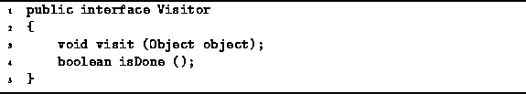

Data Structures and Algorithms
with Object-Oriented Design Patterns in Java
Data Structures and Algorithms
with Object-Oriented Design Patterns in Java
The Container interface described in the preceding section
interacts closely with the Visitor interface
shown in Program  .
In particular, the accept method of the Container
interface takes as its argument a reference to any class
that implements the Visitor interface.
.
In particular, the accept method of the Container
interface takes as its argument a reference to any class
that implements the Visitor interface.

Program: Visitor interface.
But what is a visitor?
A shown in Program ,
a visitor is an object that has the two methods
visit and isDone.
Of these, the visit method is the most interesting.
The visit method takes as its argument a reference
to an Object instance.
The interaction between a container and a visitor goes like this: The container is passed a reference to a visitor by calling the container's accept method. That is, the container ``accepts'' the visitor. What does a container do with a visitor? It calls the visit method of that visitor one-by-one for each object contained in the container.
The interaction between a Container and its Visitor are best understood by considering an example. The following code fragment gives the design framework for the implementation of the accept method in some concrete class, say SomeContainer, that implements the Container interface:
public class SomeContainer
implements Container
public void accept (Visitor visitor)
for each Object i in this container
visitor.visit (i);
// ...
The accept method calls visit for each object i in the container. Since Visitor is an interface, it does not provide an implementation for the visit operation. What a visitor actually does with an object depends on the actual class of visitor used.
Suppose that we want to print all of the objects in the container. One way to do this is to create a PrintingVisitor which prints every object it visits, and then to pass the visitor to the container by calling the accept method. The following code shows how we can declare the PrintingVisitor class which prints an object on the standard output stream, System.out.
public class PrintingVisitor
implements Visitor
{
public void visit (Object object)
{ System.out.println (object); }
// ...
}
Finally, given an object c that is an instance of a concrete class SomeContainer that implements the Container interface, we can call the accept method as follows:
Container c = new SomeContainer (); // ... c.accept (new PrintingVisitor ());The effect of this call is to call the visit method of the visitor for each object in the container.
 Copyright © 1998 by Bruno R. Preiss, P.Eng. All rights reserved.
Copyright © 1998 by Bruno R. Preiss, P.Eng. All rights reserved.